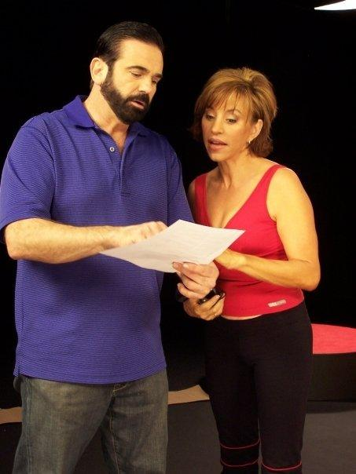
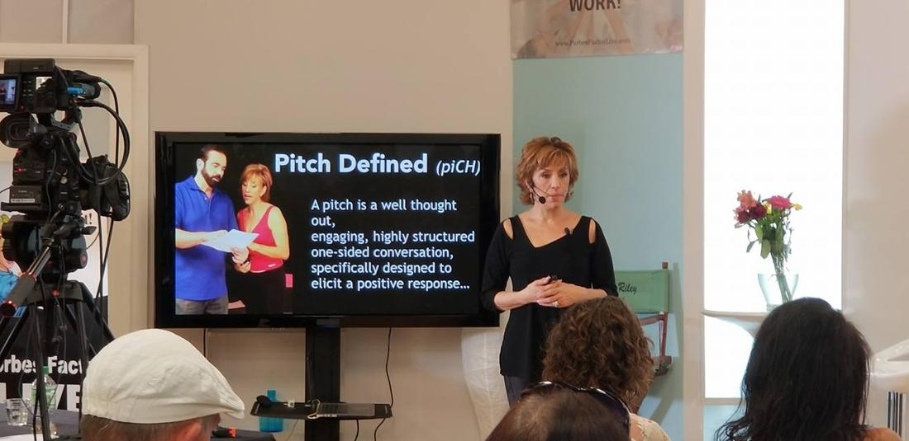
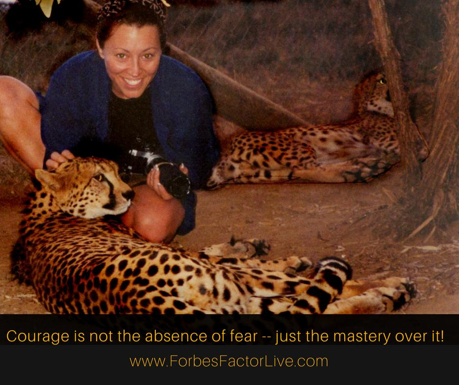
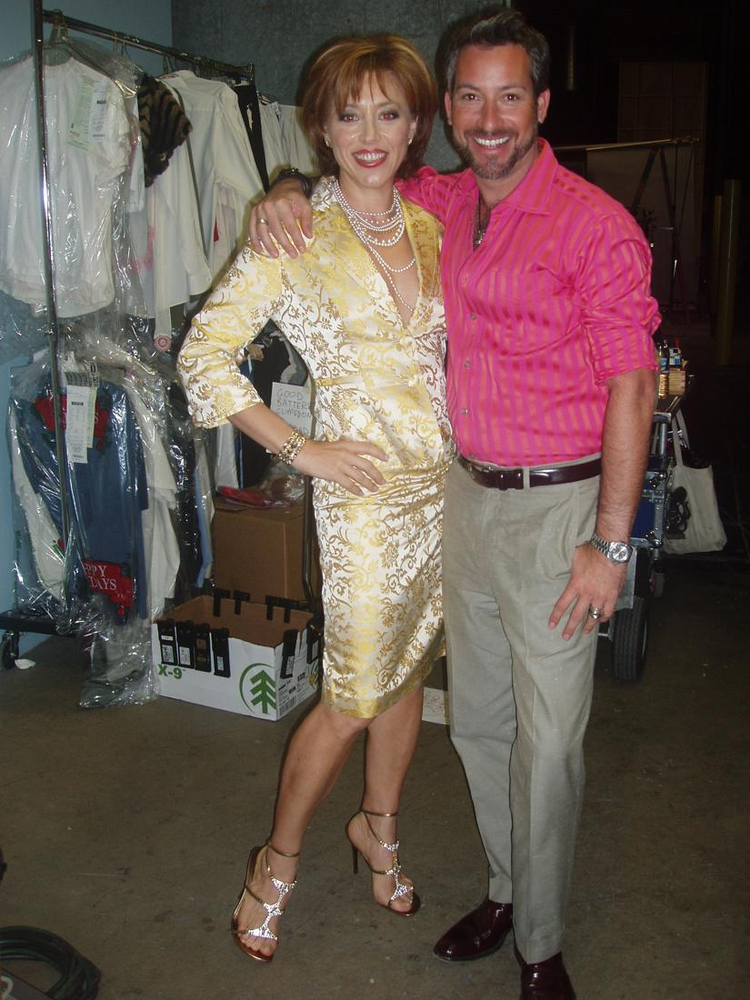
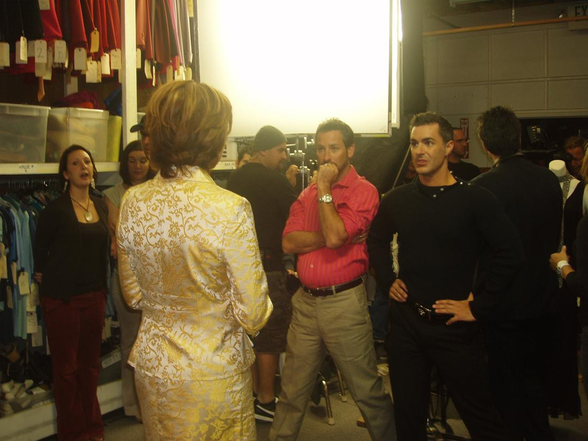
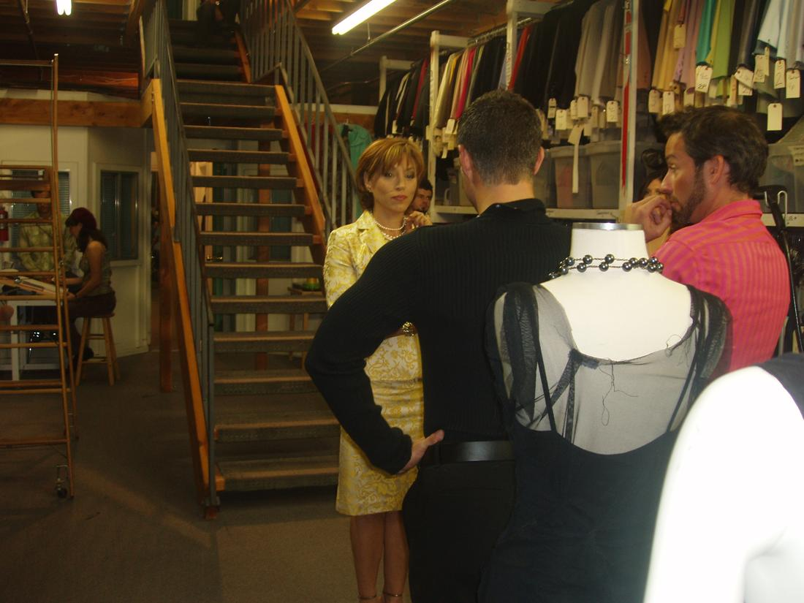

meet Forbes
This page has a new home: about. The original is kept below for reference.

Innovative & Inspirational!
Forbes Riley is an award winning national TV host, one of America’s leading health & fitness experts, keynote speaker, author and Founder/CEO of the best selling fitness system, SpinGym. Perhaps considered one of the most inspiring people on television, stage and for her coaching, Forbes’ unique connection with her audience stems from her own personal journey towards wellness and has helped her create a worldwide brand name in fitness, personal empowerment and business growth and success.


As a motivator and role model, before becoming a media success, Forbes struggled with her own weight, but e.a.t. journaling combined with SpinGym and her overall unique take on well being from mental to physical has helped her achieve her personal goals. She is now dedicated to coaching others with what she truly considers her ultimate Blueprint for Success. Forbes’ passion, quest for knowledge and need for truth about the human condition, energy, our bodies, exercise, nutrition and more, has served her well along life’s journey and now she is on a mission to help others eliminate the pain and suffering from poor body image to obesity, digestive and endurance issues to mental mindset and overall success and fulfillment.
▶ Watch the video on YouTube
▶ Watch the video on YouTube
Forbes’ most cherished role in life will always be being the mom of two outstanding boy and girl twins, Ryker and Makenna! But, she began her career as an accomplished actress and dancer in Broadway musicals, including playing opposite the late Christopher Reeve. Soon after, her career expanded to hosting TV shows on a variety of networks: ESPN (X-Games), TLC (hosting the daily national talk show: Essentials), ABC-Family, FIT-TV, and working as an actress in movies and television (Fox’s “24” and the series lead in “Fashion House” to “Picket Fences”, “The Practice”, “As The World Turns” and many more – see IMBD for details.).“Forbes lights us a room and is truly a gift – from her stage presence and training to her life experience but mostly its her heart and spirit!” Joshua Self
She can be seen live speaking at colleges, and seminars and nationally with her television talk series, Forbes Living (http://ForbesLivingTV.com). For this inspirational dynamo there is no end in sight as she lives her motto, “Dream It, Believe It, Achieve” and is now on a mission to empower everyone towards their personal best in all areas of their lives!
Forbes Riley’s crowning jewel in her accomplishments is her own media empire headquartered in St. Petersburg, Florida at the Forbes Riley Studios, (a state-of-the-art tv/film production studio and sound stage) and her branded line of fitness solutions from the SpinGym fitness system, to her e.a.t. Journal and online membership/coaching programs. And if being an international fitness pioneer isn’t enough, Forbes now spends time teaching her other entrepreneurs the secrets and blueprints for Success.
▶ Watch the video on YouTube
It is Forbes’ expertise in television hosting and her passion and knowledge in health & fitness that lead her to co-hosting two of the most successful infomercials of all time: The Power Juicer with fitness legend Jack LaLanne and the Montel Williams’ Health Master.

Contribution and Giving is a gift Forbes was given as a young girl when her father suffered a horrific accident and spent 3 years (her high school years) in the hospital enduring 15 operations. With an eye towards helping her community and those in need – Forbes is very active creating and supporting charitable solutions to help improve and strengthen all lives. Forbes is very active with a variety of charitable organizations, including Big Brothers/Big Sisters, Wounded Warriors, Veteran WheelChair Games, Clothes to Kids, Dress for Success, SPCA, The Dexter Fund, Revlon Run/Walk for the Cure, and many more. Forbes also enrolled her SpinGym business to take part in charitable giving by offering a portion of SpinGym sales to go towards supporting charitable fundraising events on a case by case basis. Giving back to help our communities thrive and grow in health and vitality benefits us all. Forbes is often traveling as an integral part of her business, and she divides her time between homes in Los Angeles, CA and St. Petersburg, FL For more information about Forbes Riley, please visit www.ForbesRiley.com and connect with her on Facebook: www.FunWithForbes.comMany moons ago I had the chance of a lifetime – to star in a tv series pilot for FOX – I played Maria Zianna – fashion house diva in charge of an empire with young gorgeous models and handsome devious men everywhere – as you can imagine I loved it! Many are still my good friends today #garrettswann #tonytripoli #joelberti and one of the most fascinating facts is that the talented actor playing my son #taylorkinney is starring in #chicagofire and engaged to the #musician #LadyGaga — wow! produced by Stephen Brown and Paul Buccieri – I had the time of my life — that was until they went to shoot the 65 series episodes and #Fox TV concluded my “name” was not famous enough to launch the show and the marketing campaign –they replace me with Bo Derek #boderek — needless to say I was devastated — so much it was my turning point to leave #Hollywood when my agent advised me to “brand” myself and if I still wanted to act I should make enough money and buy my own movies — well – they say one door closes — and so here I am 10 years later – fitness empire, SpinGym, inspiring others and creating dreams — it is fun though to reminisce and think – hmmm what if! ▶ Watch the video on YouTube
Many moons ago I had the chance of a lifetime – to star in a tv series pilot for FOX – I played Maria Zianna – fashion house diva in charge of an empire with young gorgeous models and handsome devious men everywhere – as you can imagine I loved it! Many are still my good friends today #garrettswann #tonytripoli #joelberti and one of the most fascinating facts is that the talented actor playing my son #taylorkinney is starring in #chicagofire and engaged to the #musician #LadyGaga — wow! produced by Stephen Brown and Paul Buccieri – I had the time of my life — that was until they went to shoot the 65 series episodes and #Fox TV concluded my “name” was not famous enough to launch the show and the marketing campaign –they replace me with Bo Derek #boderek — needless to say I was devastated — so much it was my turning point to leave #Hollywood when my agent advised me to “brand” myself and if I still wanted to act I should make enough money and buy my own movies — well – they say one door closes — and so here I am 10 years later – fitness empire, SpinGym, inspiring others and creating dreams — it is fun though to reminisce and think – hmmm what if! ▶ Watch the video on YouTube
Many moons ago I had the chance of a lifetime – to star in a tv series pilot for FOX – I played Maria Zianna – fashion house diva in charge of an empire with young gorgeous models and handsome devious men everywhere – as you can imagine I loved it! Many are still my good friends today #garrettswann #tonytripoli #joelberti and one of the most fascinating facts is that the talented actor playing my son #taylorkinney is starring in #chicagofire and engaged to the #musician #LadyGaga — wow! produced by Stephen Brown and Paul Buccieri – I had the time of my life — that was until they went to shoot the 65 series episodes and #Fox TV concluded my “name” was not famous enough to launch the show and the marketing campaign –they replace me with Bo Derek #boderek — needless to say I was devastated — so much it was my turning point to leave #Hollywood when my agent advised me to “brand” myself and if I still wanted to act I should make enough money and buy my own movies — well – they say one door closes — and so here I am 10 years later – fitness empire, SpinGym, inspiring others and creating dreams — it is fun though to reminisce and think – hmmm what if! ▶ Watch the video on YouTube
Many moons ago I had the chance of a lifetime – to star in a tv series pilot for FOX – I played Maria Zianna – fashion house diva in charge of an empire with young gorgeous models and handsome devious men everywhere – as you can imagine I loved it! Many are still my good friends today #garrettswann #tonytripoli #joelberti and one of the most fascinating facts is that the talented actor playing my son #taylorkinney is starring in #chicagofire and engaged to the #musician #LadyGaga — wow! produced by Stephen Brown and Paul Buccieri – I had the time of my life — that was until they went to shoot the 65 series episodes and #Fox TV concluded my “name” was not famous enough to launch the show and the marketing campaign –they replace me with Bo Derek #boderek — needless to say I was devastated — so much it was my turning point to leave #Hollywood when my agent advised me to “brand” myself and if I still wanted to act I should make enough money and buy my own movies — well – they say one door closes — and so here I am 10 years later – fitness empire, SpinGym, inspiring others and creating dreams — it is fun though to reminisce and think – hmmm what if! ▶ Watch the video on YouTube
   Click edit button to change this text.